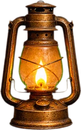

Como funciona
Todo caso segue o mesmo método

Investigue
Examine os pontos brilhantes de cada cena. Cada pista é anotada no seu caderno.
Interrogue
Converse com personagens das obras ou leia os telegramas do caso.

Decifre
Cadeados, anagramas, cifras e questões no estilo ENEM liberam a próxima pista.

Mantenha a luz
Cada erro apaga uma lamparina. Sem luz, o caso volta para o início do capítulo.